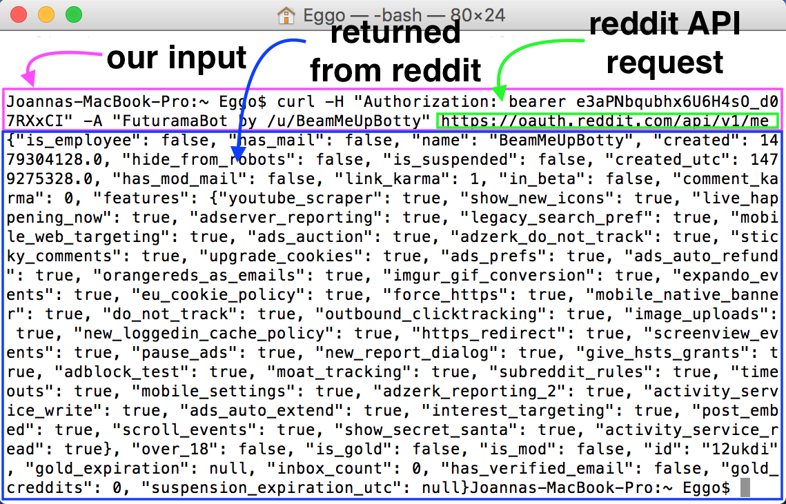

Now that you have a Reddit API Key, you can use Reddit's API to do all sorts of fun things. Let's say you want to pull up some information about your account. There are several ways you can do so.
To use Terminal or Command Line to get information from Reddit, we must first get a token. In Terminal or Command Line, copy and paste in the following:
curl -X POST -d 'grant_type=password&username=REDDIT_USERNAME&password=REDDIT_PASSWORD' --user 'CLIEND_ID:CLIENT_SECRET' https://www.reddit.com/api/v1/access_token
Replace REDDIT_USERNAME with your Reddit username, REDDIT_PASSWORD with your Reddit password, CLIENT_ID with your app's client ID, and CLIENT_SECRET with your app's client secret. You can find your ID and secret on your app preferences page.
Now we have a temporary token. Note that it expires in 3600 seconds (or an hour), so once that time is up, we'll have to repeat the step above to get another token.
We can use our token to request information about our account. To do so, copy and paste the following into Terminal or Command Line:
curl -H "Authorization: bearer CLIENT_TOKEN" -A "PROJECT_NAME by REDDIT_USERNAME" https://oauth.reddit.com/api/v1/me
Replace CLIENT_TOKEN with the token you acquired earlier, PROJECT_NAME with the name of your bot or your project, and REDDIT_USERNAME with your Reddit username.

p
Let's look at the info returned to us. We can see that our account is not a Reddit employee account, has no mail, is named BeamMeUpBotty, and all sorts of other things. Pretty cool, right?
p